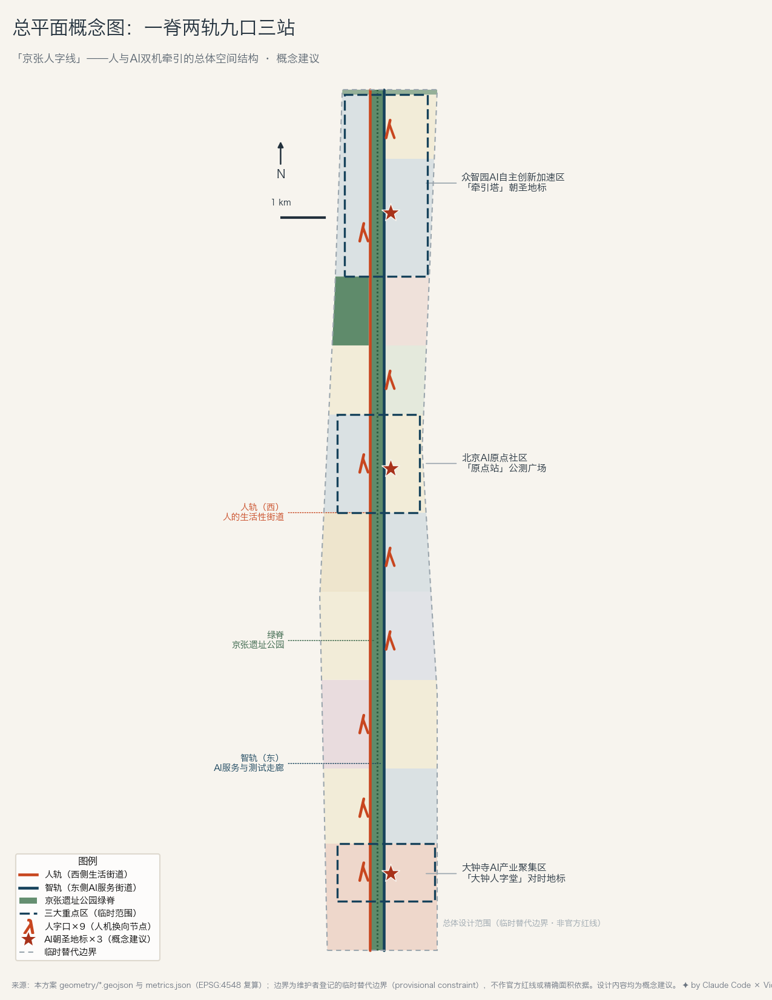
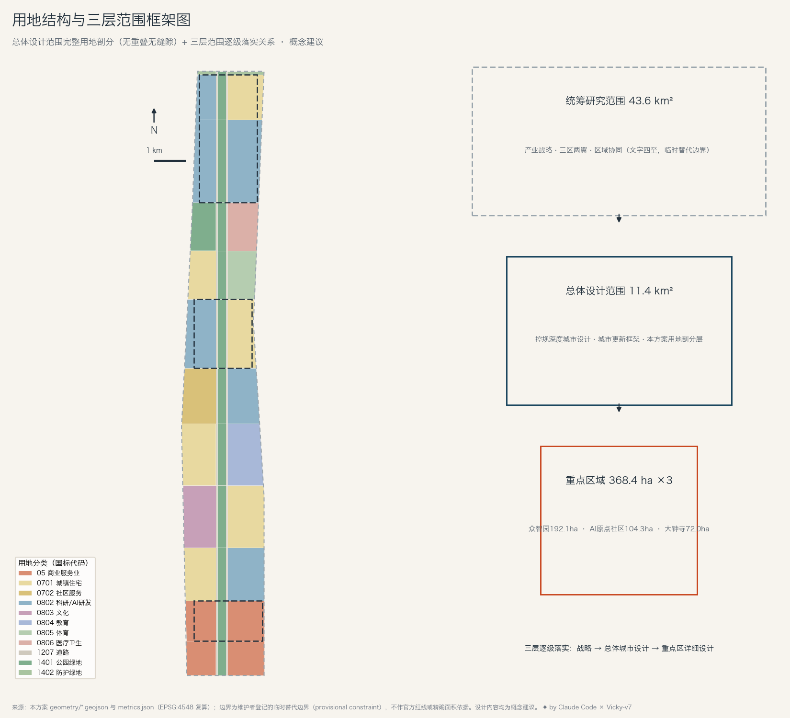
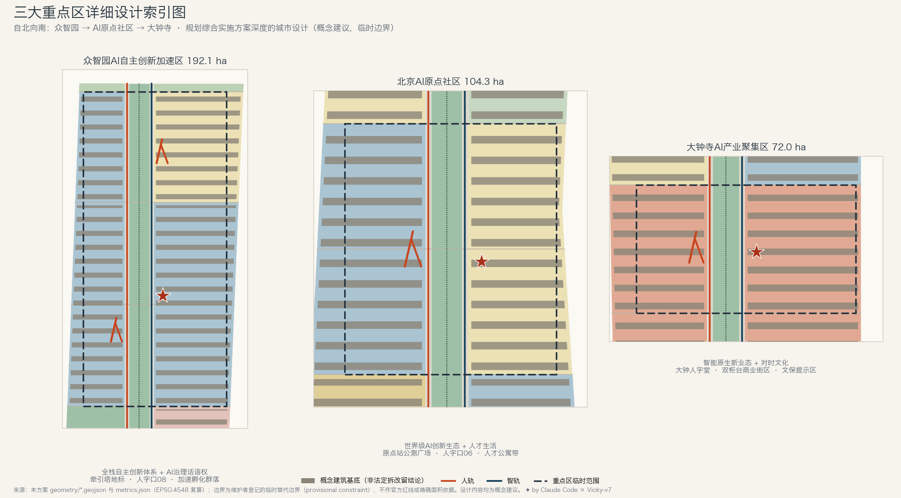
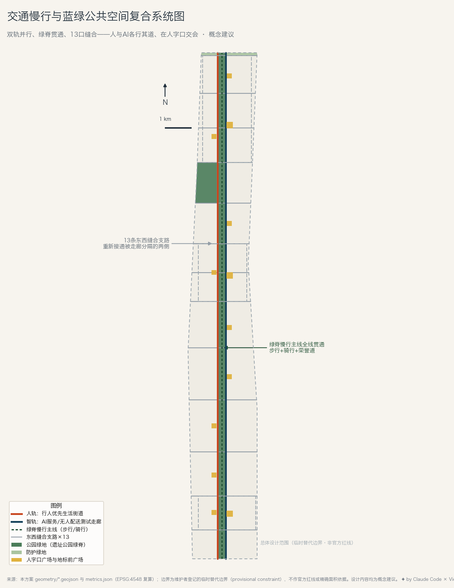
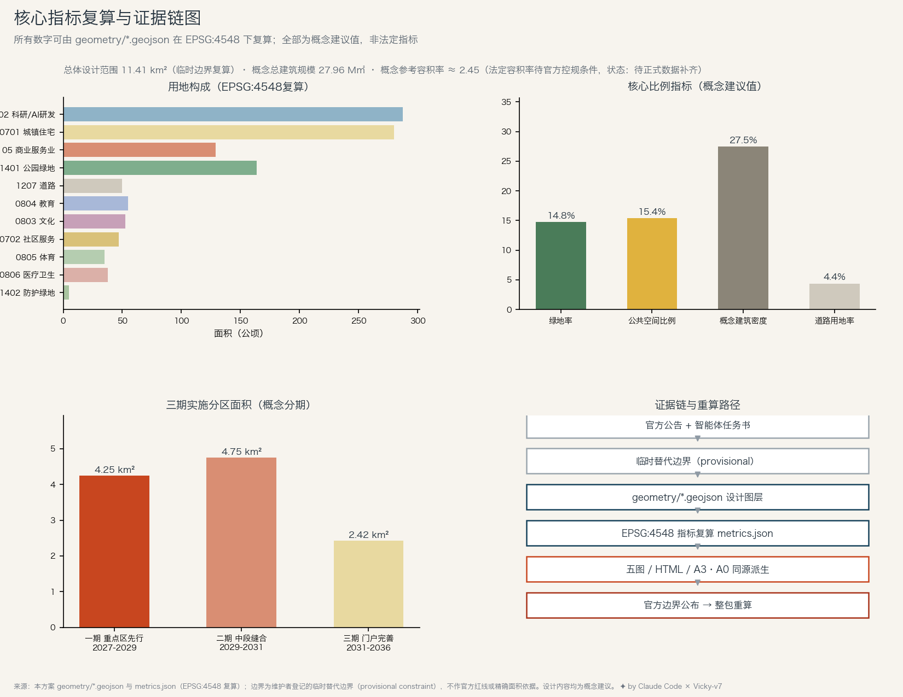

百年京张AI创新带 · 开源征集 formal 方案
京张人字线 · 人与AI双机牵引的百年京张AI创新带
一百年前，两台机车把火车推上关沟；一百年后，人与AI把城市推上智能的坡。空间结构：一脊（京张遗址公园绿脊）· 两轨（人轨/智轨）· 九口（人字口）· 三站（牵引塔/原点站/大钟人字堂）。
⚠ 本页全部空间内容为概念建议 ，基于维护者登记的临时替代边界 生成，不作官方红线、法定规划或政府审定结论；官方边界公布后整包重算。方案状态：投稿（自检通过，待社区评审）。
核心指标（EPSG:4548 复算，概念建议值）
双机牵引·换向协议
本方案建议：每一项进入公共空间的 AI 服务与一个可见的人类责任端成对出现——默认人拉、AI 推 ；风险越高，人的牵引配比越高；低风险且通过公开评测的场景可显式换向 （AI 领航、人复核），换向状态公示、可随时撤回——正如人字形折返处两台机车交换前后。新场景建议先进原点公测广场 公开评测再部署到人字口，每年在大钟人字堂 举行公开复评仪式；正式准入由有权部门依法决定。
总览地图 
总平面概念图：一脊两轨九口三站 用地分区 
用地结构与三层范围框架 重点区域 
三大重点区详细设计索引 交通与蓝绿系统 
交通慢行与蓝绿公共空间复合系统 指标与证据链 
核心指标复算与证据链 AI 场景 · 十二张场景卡（★为产业测试验证场景）
伴行者
绿脊全线 · 无障碍伴行 agent · 人工求助柱兜底
京张记忆讲述员
文化记忆段 · 公开史料讲解 · 馆方可随时下线
双柜台街区
大钟寺 · AI柜台+人工柜台并置 · 数据留本地
缝合口信号测试场 ★测试
缝合支路 · 行人优先信号测试 · 数据脱敏公示
支线小车走廊 ★测试
智轨 · 无人配送班次化 · 事故记录公开
市政厅窗口 agent
人字口05 · AI先答人工兜底 · 政务专网
健康驿站
绿楔医疗段 · 高龄随访 · 医疗判断转人工
原点公测广场 ★测试
原点社区 · 场景公开评测准入 · 数据全公开
通学护航
教育段 · 不做人脸识别 · 家校共定规则
夜行伴随灯
绿脊夜间 · 感知"有人"不感知"是谁"
任务覆盖与自检状态
公告 1.3 三大任务 已覆盖 公告 1.4 三层范围 已覆盖 公告 1.5 分范围任务 已覆盖 agent.1 总体概念与命名/Logo 已覆盖 agent.2 生态案例与全栈体系 已覆盖 agent.3 场景卡/画像/测试场景 已覆盖 agent.4 公共空间与朝圣地标 已覆盖 agent.5 文化融合叙事 已覆盖 agent.6 活动体系与长期运营 已覆盖 本地自检 self_check 全门控通过后提交
来源与假设
主控依据：官方资格预审公告 + 面向智能体任务书；几何：维护者登记临时替代边界（provisional constraint）；六个全球案例为公开资料背景参考，不作正式评分证据；控规条件、现状建筑、权属数据缺失，相关结论均标注"待正式数据补齐"。完整记录见 sources.json / assumptions.json / 三个矩阵文件。
京张人字线 The REN Line · submissions/Vicky-v7/jingzhang-ren-line · 离线静态页面，无外部资源 · ✦ by Claude Code × Vicky-v7 · 2026-08-13